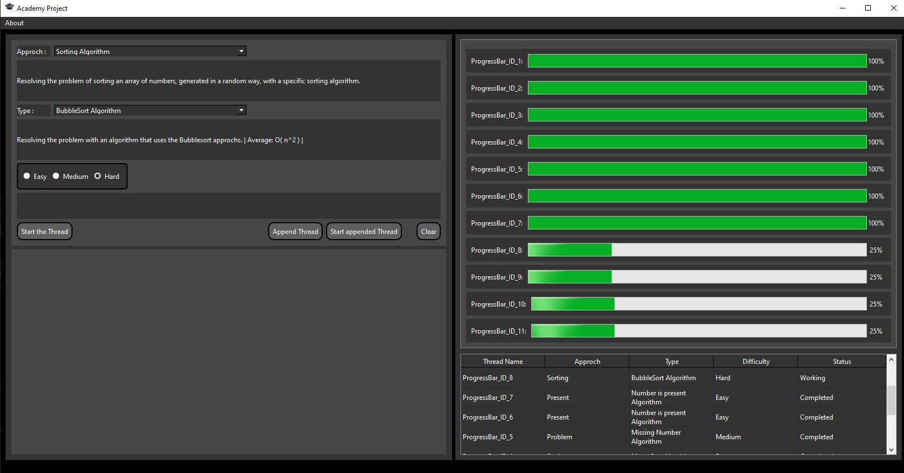

Qt - Academy Project
Desktop App realized for the Academy Project 2022. Created with Qt, it handle multiple Threads in a dinamic way; assign them a working-package and monitoring them during their life cicle. This working-package are created by the user with a simple form. The info of each thread are visible in a Table.
Source code: https://github.com/nardisync/project-QT-academyApplication Download: GitHub Release v1.0.2
Documentations Download: UML Diagrams, SRS and Sequence (ITA)

This app was developed by meeting the requirements of a SRS Document, the UML Diagrams were created by analize the SRS.
Some features:
- Easy to use: There is a simple .exe, there is no need to install
- Easy to start: All the libraries are already in the package
- Usefull project for teaching Qt
Languages
- C++
- Qt 6